Love Nikki
This is my page dedilcated to the series Love Nikki. Love Nikki is a mobile visual novel, the game's topic revolving on fashion. If you are familiar with paper doll dress up flash games then this is the one. This game is owned by Papergames and produced by Tencent Games in China. It is first published in 20th May 2015. The game currently has 5 servers and it is part 3 of the Nikki franchise / LN's Wiki Papergames' website
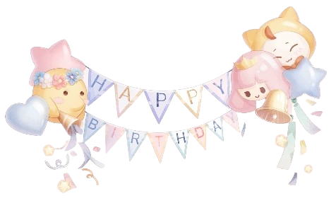
- Part 1: "A dressing story" – Nikki's daily life on Earth
- Part 2: "World travelled" – Nikki's world tour around Earth
- Part 3: "Miracle Nikki/Love Nikki" – Nikki time travel to Miraland with a quest to change the destiny of the world
- Part 4: "Shining Nikki" – After the mission in Miraland failed, Nikki went back into the past, start it all over again
- Part 5: "Infinity Nikki" – Nikki and Momo went on a new journey, collect costumes, solve puzzles, and explore mysterical places of Miraland, with a desire to touch "the miracle costume that saved the world"
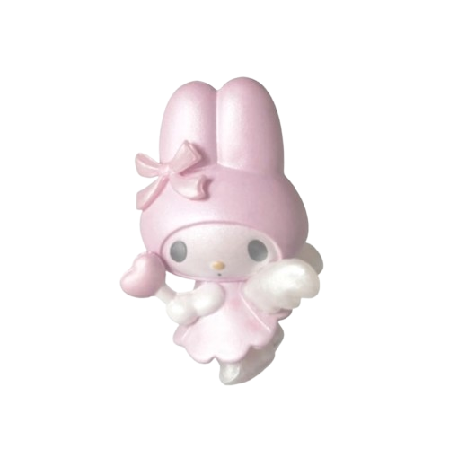
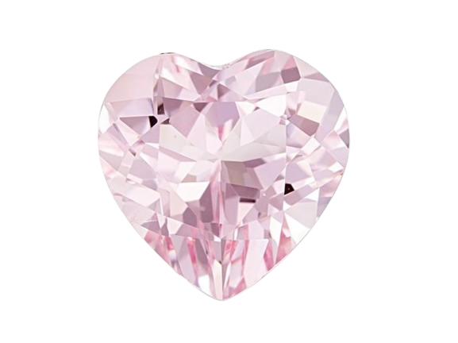
Characters
NOTE: This page would only contain basic information about the main characters and not spilling any spoilers of the LN's story
Nikki is the MC of the story. She is a cheerful and kind girl. Her apperance is dedicate and quaint, pink hair, coquette vintage dress, subtle smile. She is the ideal "girl next door" type is what I would describe
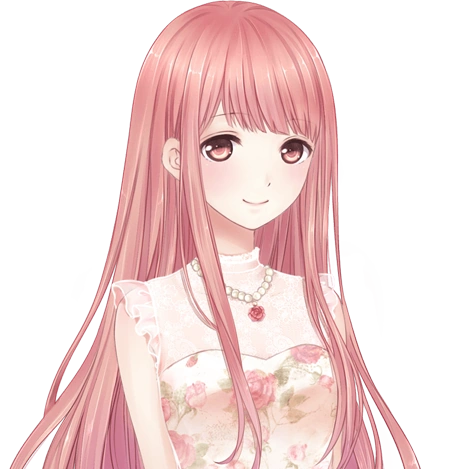
Momo is Nikki's companion. He is a talking cat who loves bacon. If anyone mentioned bacon, he would be there to take the risks. He also has an eye for pretty and mature ladies such as Lunar. His body fur is white and he always wear a yellow cat hoodie with him
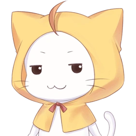
Bobo is Nikki and Momo's friends. They together go on a whole long journey through many nations. She is from Lilith nation, which represents a fairy tale fashion style. She can be seen in a fight with Momo where the two are mocking one another
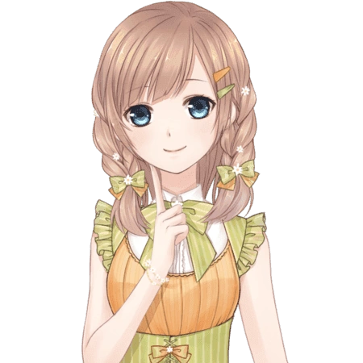
Lunar is one of the characters that very important to the plot point. She is a gentle and soft-spoken lady, dreaming to become a successful designer. Her main color scheme is purple and white. Nikki's team helped her in an incident and after then she become one of Nikki's friends
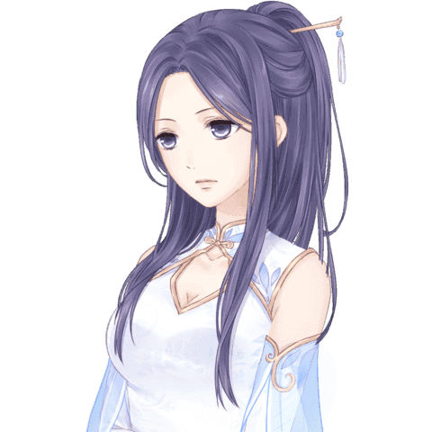
Kimi is the heir of the Apple Federation Group, daughter of a chairman. She is independent and determined to do what she can for her family business and her own self. She has long silver hair and a black white stripes pattern dress. She also has an Assistant named Joe
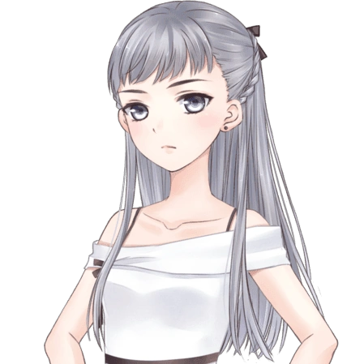
Ace is from the Pigeon Kingdom, a wandering swordman. She is actually the younger sister of queen Elle, which is the current queen of the Pigeon Kingdom.
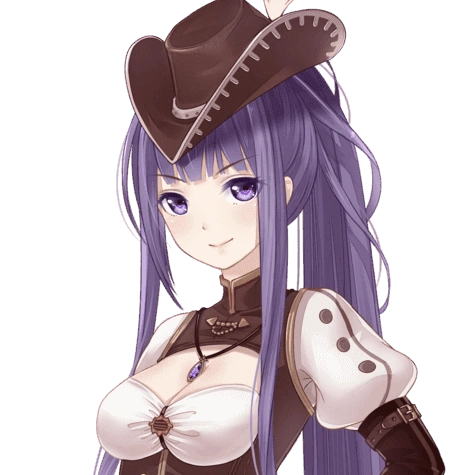
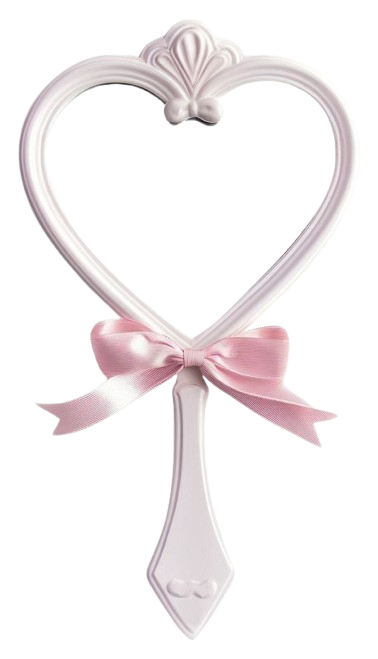
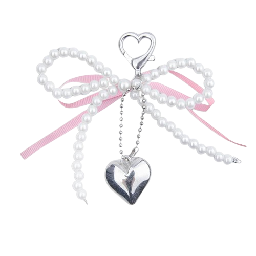
Story
The story starts off with Nikki travel to a new world called "Miraland", she accompanied with her talking cat Momo. It actually doesn't just "boom they are now in Miraland", a queen of Lilith summoned them. Their first destination is in Apple Federal where the two met Yoko. Later, Yoko is also a companion of Nikki and Momo, together, they went on a journey, meeting a lot of designers, stylists. As getting deeper into the lore, more atagonists and supporting characters show up. Story about the nations can be seen more in LN's Wiki
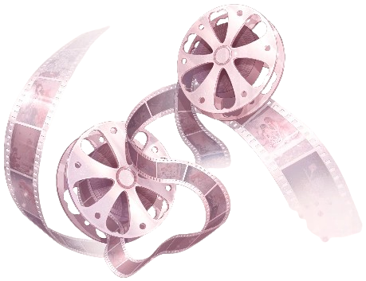
My favorite character is Kimi. She is the heir of Apple Federal. A trivia is that Kimi is shipped with Nikki and fans suspected that she is also in love with her. Kimi closely related to one of my day dreaming OC's personalities, stoic and calm. Her design is modern, matched with the nation she related to. Despite not showing up in the later chapters, or sometimes appear, she still serve as a major plot point for the story